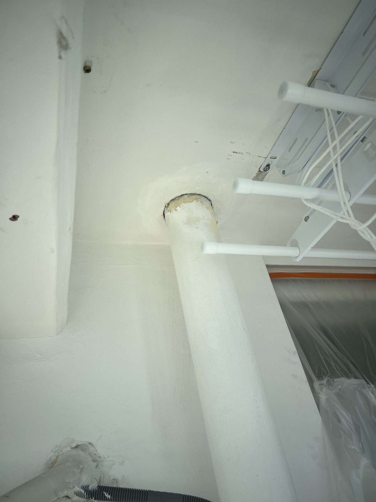
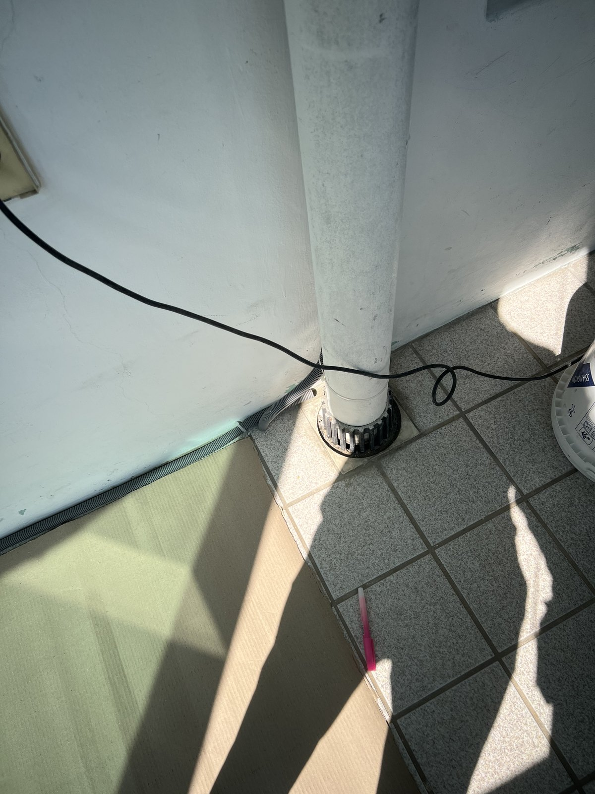
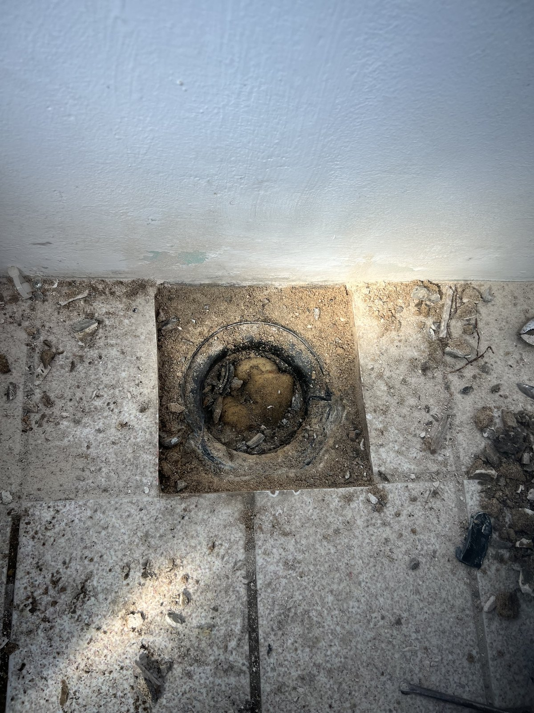
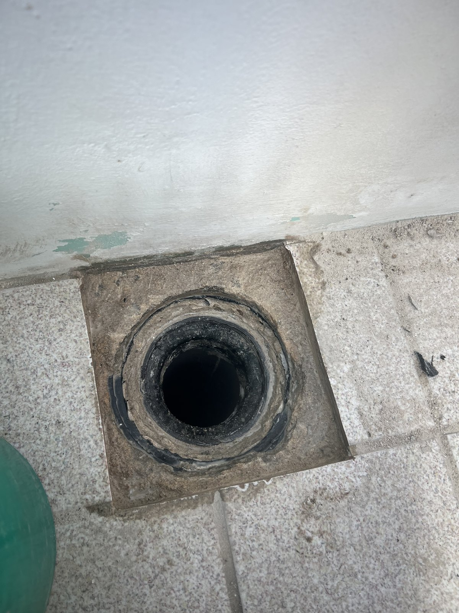
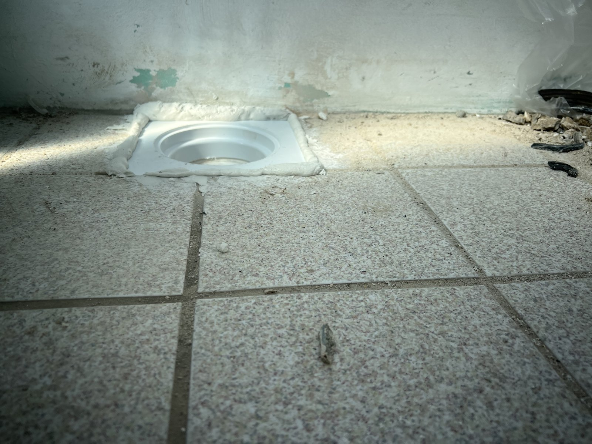
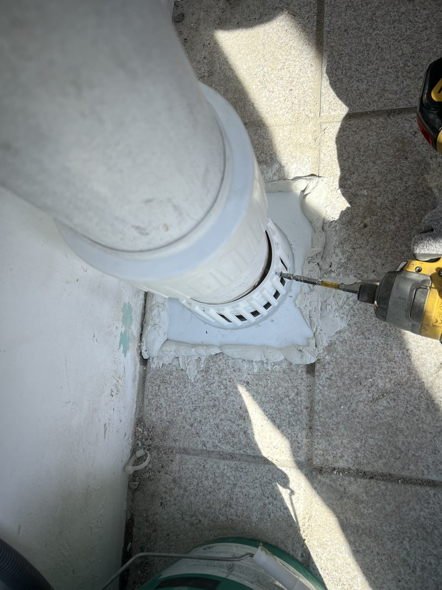
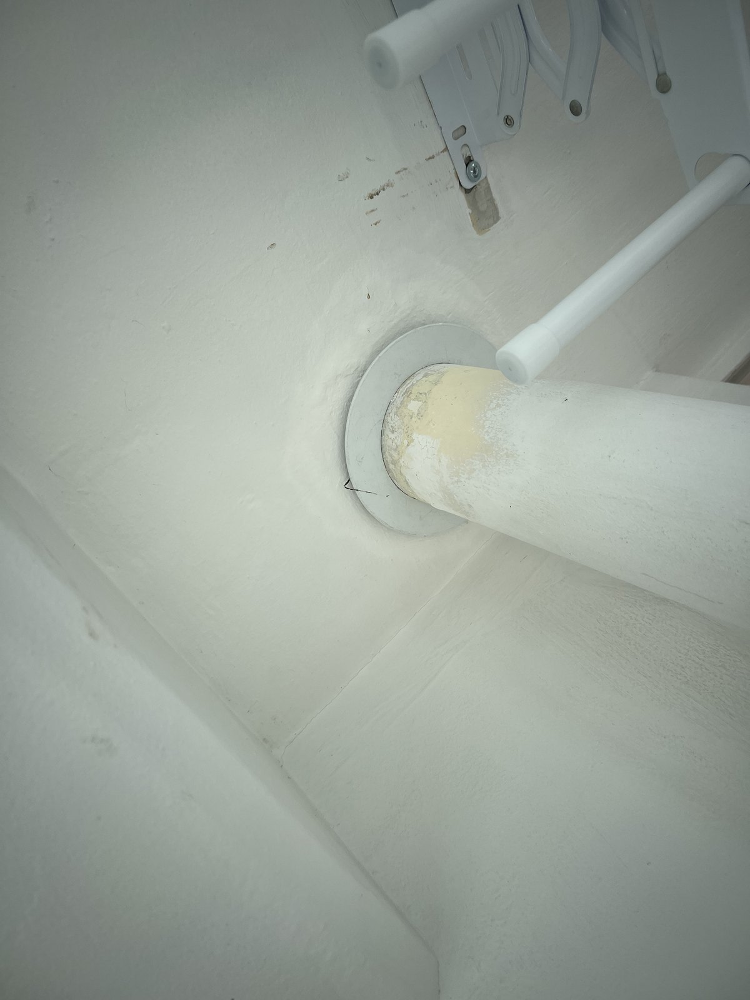
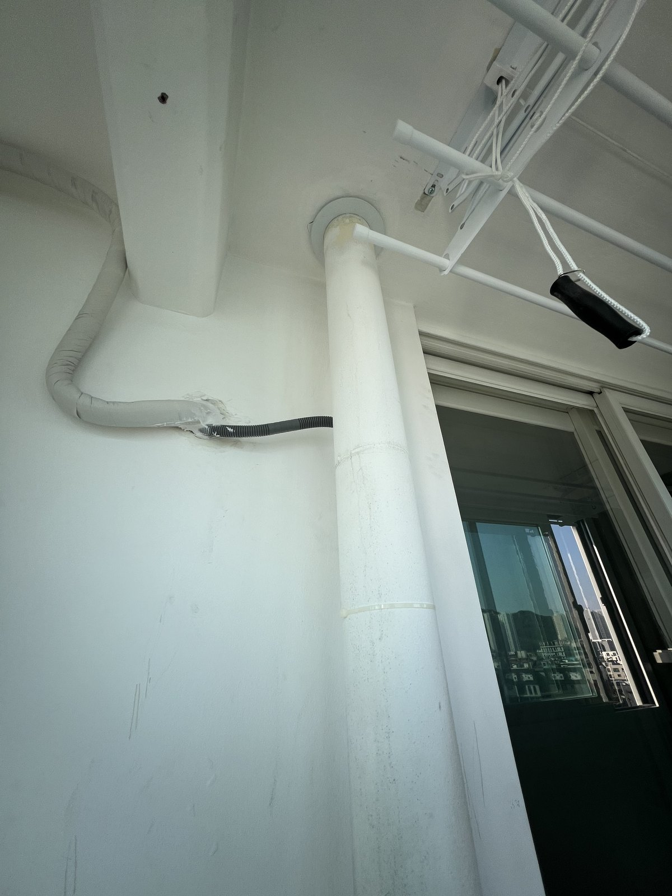
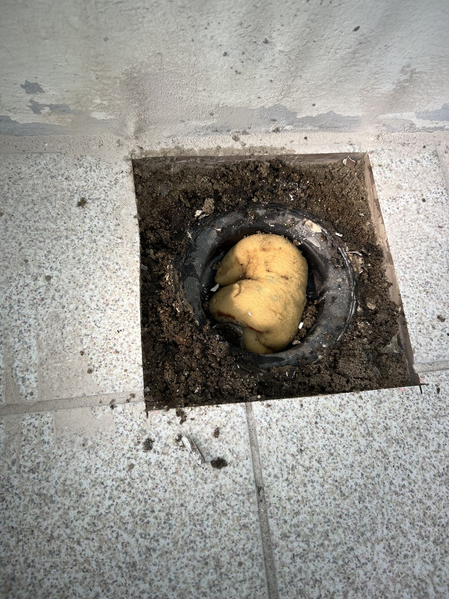

대전 진잠타운아파트 베란다 우수관 보수 — 바닥 연결부부터 천장 관통부까지

현장 작업 한눈에 보기
- 현장
- 대전 진잠타운아파트 베란다
- 문제
- 수직 우수관·바닥 연결부
보수 작업 기록 - 작업
- 바닥 배수구 정리·연결 부속 설치
천장 관통부 마감 - 결과
- 상·하부 연결과 마감 상태 기록
통수시험 결과는 별도 확인 필요
진잠타운아파트 베란다의 수직 우수관과 바닥 연결부를 보수한 기록입니다. 기존 연결부, 바닥 개방과 정리, 새 부속 설치, 천장 관통부 마감까지 두 사진 묶음에서 고른 실제 사진 10장으로 보여드립니다.
위쪽 관통부부터 확인한 현장
대전 진잠타운아파트의 베란다 우수관 보수 사진입니다. 수직관이 천장으로 이어지는 곳과 주변 마감을 먼저 살펴봅니다.
아래 사진은 작업 전후의 연결 상태를 정리한 기록이며, 사진만으로 누수 원인이나 책임 범위를 단정하지 않습니다.

바닥과 만나는 기존 연결부
관을 따라 내려오면 베란다 타일 바닥과 맞닿는 하부 연결부가 나옵니다. 위쪽 관통부와 구분해 바닥 테두리의 상태를 확인할 수 있습니다.

관을 분리하고 바닥 주변 정리
수직관을 분리한 뒤 바닥 개방부 주변을 정리하는 단계입니다. 작업 중 이물질이 들어가지 않도록 개구부를 임시로 막아 둔 모습이 보입니다.

연결부 설치 전 배수구 모습
바닥 구멍 안쪽과 사각형으로 정리한 테두리를 가까이 남겼습니다. 새 부속을 설치하기 전의 상태를 비교할 수 있는 사진입니다.

바닥 높이에 맞춘 새 부속
흰색 연결 부속을 바닥에 맞추고 주변을 정리한 장면입니다. 타일과 부속 사이의 경계가 사진에 함께 보입니다.

수직관과 하부 부속 연결
수직관을 하부 부속에 연결한 뒤의 모습입니다. 바닥 쪽 배수 그릴과 관의 연결 위치를 가까이 기록했습니다.

천장 쪽 관통부 마감
위쪽에서는 관 주변에 마감 부속을 맞춘 상태가 보입니다. 하부 사진과 함께 보면 이번에 손본 상·하부 위치를 구분하기 쉽습니다.

작업 후 수직관의 전체 위치
베란다 천장과 창가 쪽 수직관을 함께 담았습니다. 근접 사진으로 본 부속이 공간 안에서 어디에 있는지 확인할 수 있습니다.

함께 기록한 다른 연결부의 개방 단계
같은 진잠타운아파트 작업으로 확인된 두 번째 사진 묶음입니다. 이 장면에서도 바닥 연결부를 열고 주변을 정리하는 단계가 확인됩니다. 앞선 사진과 동일한 개구부라고 단정하지 않고 별도 장면으로 소개합니다.

두 번째 사진 묶음의 하부 연결 상태
새 연결 부속과 배수 그릴이 설치된 상태입니다. 이번 글은 사진에서 확인할 수 있는 우수관 보수 공정을 정리했으며, 통수시험 결과와 작업 소요시간은 기록이 없어 기재하지 않았습니다.
비슷한 증상이 있다면 물이 보이는 위치와 발생 시점을 함께 기록해 주세요. 대전 우수관·누수 상담 시 상부 관통부와 바닥 배수구 사진을 함께 보내주시면 현장 파악에 도움이 됩니다.